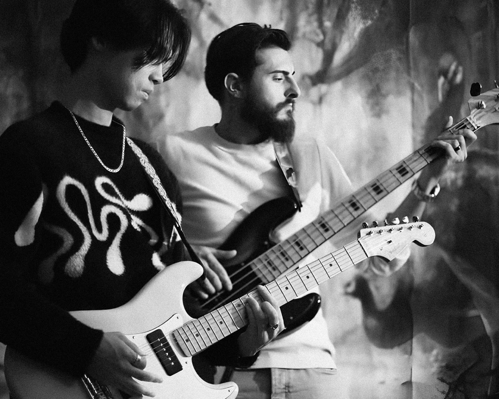
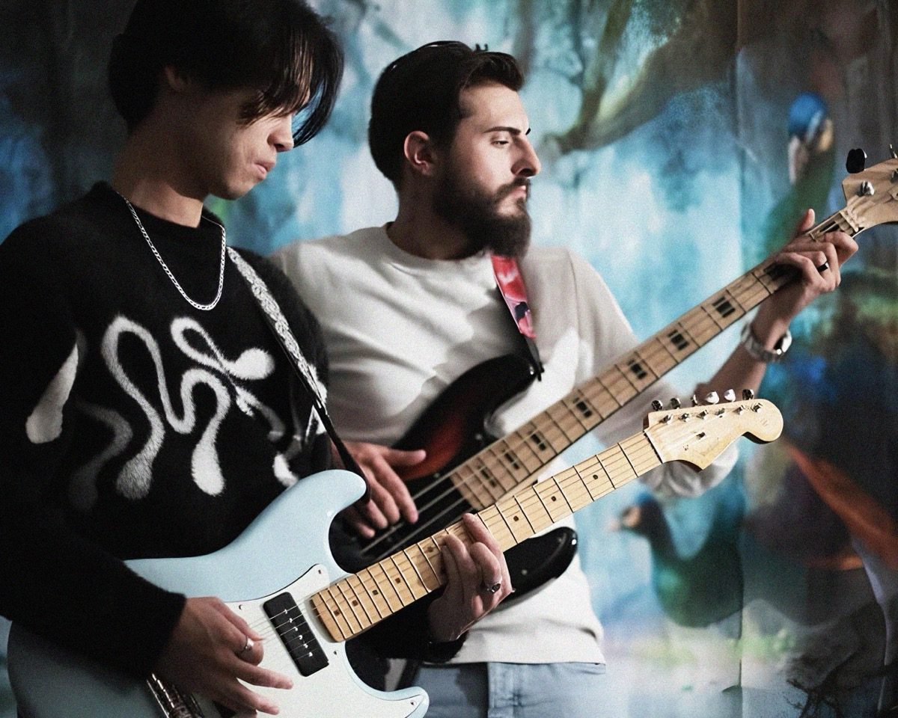

Développement full-stack
Mon cœur de métier : des interfaces Vue.js soignées, branchées sur des API Node.js, Nest.js ou Grails, jusqu'au mobile avec Flutter.
Disponible · Toulouse, hybride ou remote
Développeur Full-stack Vue.js / Node.js
Je conçois des applications web et mobiles pensées pour leurs utilisateurs, du recueil du besoin jusqu'à la mise en production. Une rigueur de testeur avant chaque livraison, et l'IA (Claude Code) comme outil de travail au quotidien.
Pendant trois ans d'alternance, chez Billeon (start-up de billetterie) puis chez Bleu122 (agence de solutions digitales), j'ai développé des applications utilisées tous les jours : une app mobile, une plateforme en marque blanche, un ERP interne.
J'y ai aussi appris ce qui se passe autour du code. En tant que Proxy Product Owner chez Billeon, j'organisais les sprints, j'écrivais les user stories et je menais la recette. Chez Bleu122, je qualifiais les anomalies avant chaque livraison client et je travaillais en binôme quotidien avec une UX Designer.
Aujourd'hui je cherche un poste de développeur full-stack à Toulouse, dans une équipe où l'on parle aux utilisateurs, où l'on explique le pourquoi des choses, et où il reste beaucoup à apprendre.
Recueil du besoin, user stories, recette utilisateur. Je traduis une demande métier en fonctionnalité qui sert vraiment.
Reproduction et qualification des anomalies, diagnostic dans le code, environnements de préprod. Rien ne part sans avoir été vérifié.
J'utilise Claude Code pour concevoir, automatiser et outiller, et je relis chaque ligne générée avec un œil critique.
Mon cœur de métier : des interfaces Vue.js soignées, branchées sur des API Node.js, Nest.js ou Grails, jusqu'au mobile avec Flutter.
Qualification d'anomalies, recette fonctionnelle et UX, tests automatisés.
Développement assisté par agent, conception de workflows et de skills, prompt engineering.
Administration de serveurs Linux, mise en place de préprod et de prod, déploiements.
Proxy Product Owner, recueil du besoin, user stories, animation de sprints.
Neuvième Vision
Média culturel toulousain qui met en avant la scène musicale émergente. Seul responsable technique : portail web Vue.js / Tailwind avec architecture SEO, back-office en cours pour rendre l'équipe éditoriale autonome. Je gère aussi la production audio et les partenariats artistes.
Bleu122 · agence de solutions digitales
Billeon · start-up de billetterie événementielle
Portail web d'un média musical toulousain que j'ai co-fondé. Architecture pensée pour le SEO, campagne de référencement en cours et back-office sur mesure en développement.
Workflow agentique piloté avec Claude Code : CLIs de recherche d'offres (WTTJ, HelloWork) qui respectent les robots.txt, template de CV LaTeX vérifié pour les ATS, skill de briefing quotidien. J'ai relu et corrigé le code généré.
ERP interne d'agence : feedback board connecté au CRM et chiffrage automatisé des devis.
Site vitrine d'un studio UX/UI, animations, micro-interactions et configurateur d'offre en arbre de décision.
Plateforme modulaire en marque blanche pour les programmes ambassadeurs de festivals.
App de billetterie utilisée par plus de 1 000 personnes, avec paiement partagé et messagerie de groupe.
Messagerie temps réel, un premier projet autour des WebSockets.


Guitariste depuis l'âge de 11 ans, nourri au jazz, au hip-hop et à la soul. Avec Neuvième Vision, je produis des performances d'artistes émergents toulousains : prise de son, mixage, direction artistique.
Du Vietnam à la Suède, en passant par l'Italie et la Croatie. Randonnées dans les Pyrénées et les Alpes, et une traversée de la Laponie suédoise en van en 2024 : autonomie, logistique, calme face aux imprévus.
Je recherche un CDI à Toulouse et alentours, en hybride ou en full remote. Je réponds rapidement.